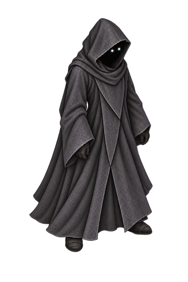

Keeper / Rift Color 05
Phase 2 color treatment · Original animation artwork preserved

Original clothFine gray texture and soft shading
Cobalt, violet & soul aquaRich blue cloth, violet shadows, icy aqua highlightsOpen the Phase 2 game · Same cloth palette is used by idle and weapon playback.